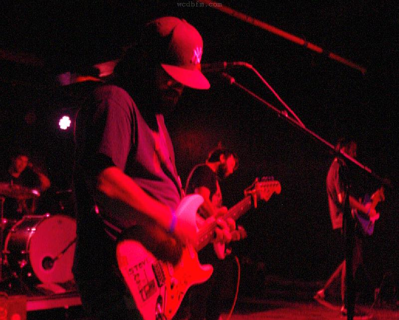

Late Modernism
Late Modernism
A weekly hour given over to mid-1970s German experimentation and its long shadow — Cluster, Harmonia, Eno-Moebius-Roedelius, the Berlin school, and the labels that kept it in print.
An hour, weekly, for the long winters.
Late Modernism started in spring 2019 as a one-off tribute to Dieter Moebius. It became a regular Thursday slot the following autumn and has been on air every week since — with the occasional substitute, the occasional pledge drive, and one unplanned hiatus.
The show is unscripted and album-led. Most weeks DJ Halftone picks a thread — a label, a year, a producer, a city — and plays through it in long sequences with brief between-track context. Tape loops, drone, kosmische, post-rock that owes anything to Cluster.
Listener requests come in through the studio phone (ext. 4090) and almost always get played.
A reference librarian by day. Came to college radio in 2018 after years of writing about minimal synth on a now-defunct blog. Believes the album side is the unit of measurement.
The last six Thursdays.
If you like Late Modernism.
Three hours of drone, ambient, and tape loops. Thursdays after midnight.
Pop records that flopped on release, reconsidered. Fridays at 1 a.m.
Open-format late slot. No genre rules, no playlist — whatever lands on the turntable.
Drop us your email.
Once-a-month dispatch from the studio — new shows, upcoming events, the occasional pledge drive. No spam, no algorithms.
- Live stream
- Schedule
- Recent spins
- Shows
- About
- Pledge
- Volunteer
- Contact